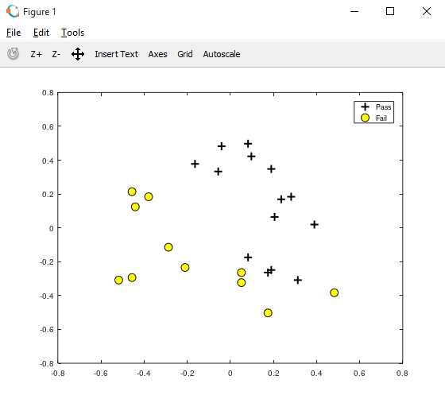
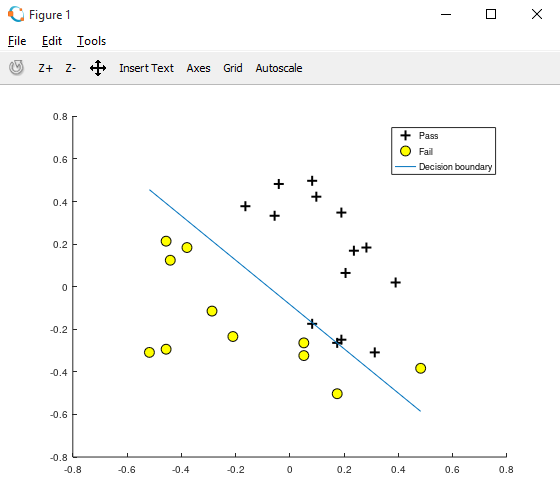

HOME BLOG EBOOKS ABOUT CONTACT SHOP
In this section, we will try to implement a very simple example of logisitic regression.
For this example, we will try to predict the result(pass/fail) of a student based on his 2 test scores. The data set we are using can be downloaded here: scoresvspass.
>> data = load('scoresvspass.txt') #load the data text file
>> x = data(:,[1,2]); #store the 2 test scores as x
>> y = data(:,3); #store the results as y
>> global m = length(x); #store the no of training examples as m
#it is declared as global so that it can be accessed from within a function
#For faster implementation, this data can be feature scaled as follows.
>> global avgx = sum(x)./m; #average value in each column of x
>> global rangex = max(x)- min(x); #maximum - minimum value in each column
>> x = (x-avgx)./rangex;
>> plot(x(pos, 1), x(pos, 2), 'k+','LineWidth', 2, 'MarkerSize', 10);
>> hold on;
>> plot(x(neg, 1), x(neg, 2), 'ko', 'MarkerFaceColor', 'y','MarkerSize', 10);
>> hold on;
>> xlabel('Score 1');
>> ylabel('Score 2');
>> legend('Pass', 'Fail');

>> X = [ones(m, 1) x]; #matrix X includes the x0 values
>> function J = findCost(X,y,theta) #declare the cost function
J = 0; #initialize cost as zero
global m;
z = X* theta;
htheta = 1 ./ (1 + exp(-z)); #Hypothesis function sigmoid of X*theta
J = sum((-y.*log(htheta)) - (1-y).*log(1-(htheta)))/m; #Cost value J
end;
>> global theta = zeros(3, 1); #initialize theta as 0,0 or any other values
>> iterations = 15000; #a random large no
>> alpha = 0.09; #learning rate
>> J_values = zeros(iterations, 1); #Initialize the cost values before iteration
>> function [theta,J_values] = gradientDescent(X, y, theta, alpha, num_iters) #Declare the gradient descent function
for i = 1:num_iters #Loop to iterate till cost function minimizes
global m;
z = X* theta;
htheta = 1 ./ (1 + exp(-z));
error = htheta -y;
theta = theta - ((alpha/m) * (X'*error)); #gradient descent vector implementation
J_values(i) = findCost(X, y, theta); #Cost value at an iteration
end;
end;
>> [theta,J_values] = gradientDescent(X, y, theta, alpha, iterations); #calling the gradient descent function
>> theta #theta values corresponding to minimum cost
theta =
0.82597
10.33155
9.92384
>> x1= [min(X(:,2)),max(X(:,2))]; #x axis of decision boundary
>> y1 = (-1./theta(3)).*(theta(2).*x1 + theta(1));
#equation of decision boundary: theta1 + (theta2)x + (theta3)y = 0
#rearranging to express y in terms of x
>> plot(x1,y1);
>> legend('Pass', 'Fail', 'Decision boundary');

>> function prediction = predict(score1,score2) #declare the predict function
global avgx;
global rangex;
global theta;
prediction = 0;
scores =([score1,score2] - avgx)./rangex; #scaling the input scores
prediction = [1, scores]*theta;
prediction = 1 ./ (1 + exp(-prediction)); #sigmoid
end;
>> prediction = predict(60,75) #Predicting the result of a student with test scores 60 and 75
prediction = 0.87259
Notice that the predicted result is a value between 0 and 1, it can be interpreted as the probability that the result is a positive (y=1). In our example, for test scores 60 and 75, there is a 87% probability that the student passes.
An additional condition like the following can be used inside the predict function for binary output.
>> if prediction >= 0.5
output = 1;
else
output = 0;
end;